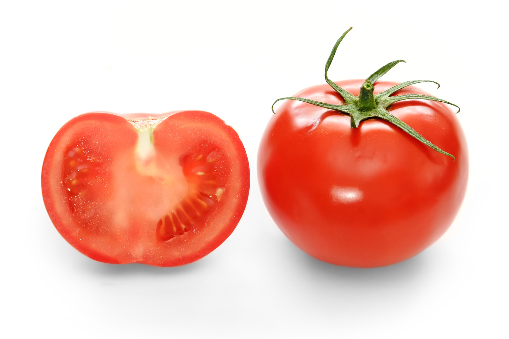

Conceptual Organization in the Supermarket
Adam Hornsby (@adamnhornsby),
Thomas Evans, Peter Riefer, Rosie Prior & Brad Love
https://arxiv.org/abs/1810.08577
Introduction
What is a tomato?
It's a fruit, it's red, it's fleshy and juicy...
...but is this how customers think?
The answer helps us to optimize in-store and online search for customers
Tomatoes elude us because...
Objects gain meaning through their interactions with other objects (Wittgenstein, 1967, Jones & Love, 2007)People categorise things in terms of goals (tomato → salad), as well as taxonomy (tomato → fruit)
Can we categorise products in a way that is
more aligned with how customers think?
NLP researchers know about interactions

"You shall know a word by the company it keeps" (Firth, 1957)
(i.e. Distributional Hypothesis)
Topic models (e.g. LDA) use this premise to learn high-level categories from language data
So maybe a topic model can learn the mental categories used by customers?
Imagine a basket instead of a sentence

It is straightforward to use existing NLP algorithms on basket data
Basket data requires less preprocessing and is unordered, which suits many NLP algorithms better
Will a topic model recover meaningful categories from basket data
directly?
Results
Our topic model discovered semantic groups

We tuned an LDA model (through Spark 1.6) on 1.2m real supermarket transactions
The final 25 topics appeared coherent and grouped around specifc (e.g. Stir fry) and general (e.g. Cooking from scratch), goal-directed themes
So did they make sense to consumers?
Consumers agreed with LDA's topics

An experiment with 1000 real consumers showed that they could identify "intruder" products accurately
Suggests that most topics were similar to mental categories held by consumers
Some were difficult (e.g. Afternoon tea), perhaps
due to individual differences
Topics also predicted individual differences
The topics customers purchased predicted their self-reported age, location and gender
Suggests that people's mental representations of products may differ between individuals and groups
This can help us to personalise search algorithms
Conclusions
Conclusions
Consumers think about products in terms of their roles with other products
(e.g. "goes well in a salad")
Differences in experience may lead to different mental categories
Topic models apply to other data sources (e.g. baskets)
We are using this insight to optimize customer's routes through the store (both online and offline) (e.g. dual siting)
An alternative source of data for evaluating NLP models
(data & code available soon)
Thank You
arxiv.org/abs/1810.08577Adam Hornsby (@adamnhornsby), Thomas Evans, Peter Riefer, Rosie Prior & Brad Love